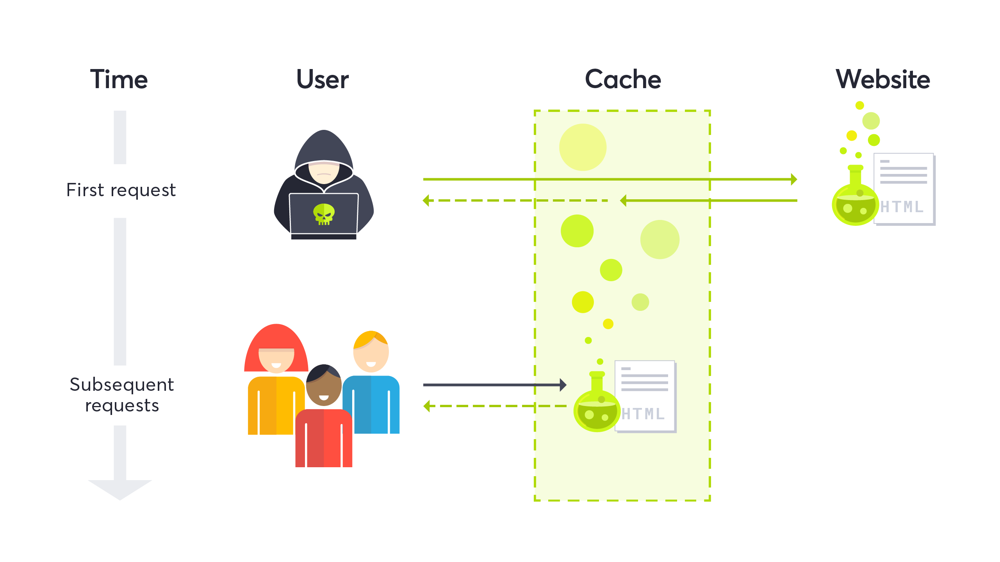

Web Cache Poisoning to Account Takeover

Starting off,this is a vulnerability that I found during a bug bounty engagement.I would split this into two parts, or two separate vulnerabilities. The First part was a web cache poisoning via X Headers.This part allowed me to achieve XSS on every endpoint with a combination of two Headers.The next part was a Oauth flow flaw that allowed me to leverage my previously given XSS capabilities into an account takeover through a technique I call cookie overriding.Before I begin explaining this exploit chain, I have to say that since this is a private program I can’t disclose the site that it was found on.
Web Cache Poisoning:
This vulnerability is well documented on Portswigger by James Kettle, and this is where I had first heard about so for a more in-depth introduction,I recommend reading that article.However for a quick primer,web cache poisoning is a vulnerability that allows an attacker to poison a HTTP response by injecting a malicious code into a non keyed HTTP request header. A web Cache is basically a way for websites to lower the load on their servers by replaying resources to users without asking the server.They look for specific keys in the the HTTP request to determine if they have already cached the resource and if they have, that’s what any user that matches that request gets served.These cache keys could be anything ranging from the URI to the Accept HTTP headers.However there are certain HTTP request headers that are not keyed and can introduce reflected output onto a HTTP response depending on the code implemented. A popular one and the one that’ll be exploited in this report is the X-Forwarded-Host header.This header can populated with a XSS payload and used to reflect a XSS payload into a HTTP response. After the cache gets this response and saves it without the unkeyed header, you can consider the cache poisoned and it will pass the response to every user that visits that URL.That’s the basis of the attack, but this can be supplemented with another unkeyed header to increase the severity so that you can poison the cache for every URL on the site. This Header is the X-Rewrite-Url header, and this basically rewrites the URN that is being cached. So lets say the URN in a HTTP request is /home, the cache thinks its saving this HTTP response. But if you add the X-Rewrite-Url header, it’ll actually load the malicious HTTP response at /evil.The header is usually unkeyed so it’ll serve the poisoned response to any user that requests for /home.

The Exploit Chain(part 1):
What happened is that I found a site that supports both of these headers and had a page that reflected the X-Forwarded-Host header in a JavaScript variable on one of its pages.Using the combination of the X-Forwarded Host and the X-Rewrite-Url headers I was able to gain XSS on every page on the site without user interaction.However it was really only cached for about 3 minutes.To increase the severity I made a script to automate the poisoning, stating that I could just poison the home page endpoint every 3 minutes to infect every user that visits the site.However the team that the report was submitted to wanted to keep it a medium severity.This wasn’t something I was trying to see so I went looking for another way to increase the severity. Which leads me to the second portion of this post, an Account takeover due to a flaw in their Oauth Flow.
Oauth Flaw:
If you not familiar with Oauth, this section will cover the flow of an Authorization Grant which was the grant used in this case. There are four major entities to this grant,the Client, the User, the Authorization server and the Resource Provider.The first step is the User requests access to a Resource.The Oauth Client sees this request and redirects the user to the Authorization server.The User validates their credentials with the Authorization server and if approved, gets an access code. After this the User is redirected back to the client and the client takes this code.The Client then takes this code and validates it with the Authorization server and finally gets an access token. This access token is used to retrieve data from the Resource Provider on behalf of the user. The issue on this site was after the code was sent back it was processed by an URL which took a value in a cookie that was another trusted OAuth callback URL and appended the code after a hash fragment to the value in the cookie and redirected the browser to this location.This allows for anyone that changes the cookie value to redirect the code to an arbitrary location.After that the attacker could just submit the code to the Authorization server and get a access token on behalf of the targeted user.

Cookie Overriding: Normally this wouldn’t be a issue due to two factors,the cookie was HTTPOnly and number two, the URL in the cookie was whitelisted to only trusted sites.The second problem was already solved in my case, since the cache poisoning XSS was already on a trusted subdomain. The first problem was the problem that had to get solved.How do you use a XSS to change a cookie value that’s HTTPOnly? The answer is that you don’t, you make a cookie that looks like the HTTPOnly cookie, and set the path parameter to a certain URN where the cookie was being used.If a browser sees two cookies of the same name, but one has a more specified path, when a HTTP request to that path is requested, it’ll choose precedence to the cookie with the specific path.With this I could craft a cookie on the poisoned subdomain using the XSS ,this cookies would work for all subdomains below the root domain and it would set the specific path to the path that initiated the URL in the cookie value.
Exploit Chain(Part 2):
After assembling all the parts, the global poisoned XSS ,the cookie overriding, and the OAuth flaw the question is how do I put these all together and actually takeover accounts.This is the exploit chain I came up with.Taking in consideration the time constraint, first I poisoned two endpoints. The first endpoint had the XSS payload and was located on the main page of the site. It wrote the malicious cookie to the user’s browser, then redirected the browser to the OAuth flow. The second poisoned endpoint was located on a nonexistent endpoint that’s 404 response code was overridden with the poisoned response. This endpoint handled the callback from the redirected URL that was inserted in the cookie.This URL contained the code from the Oauth flow, and after receiving the code, the payload used another document.location to send the code off to the attacker’s site in a query string. On the endpoint on the attacker’s site I added another document.location after logging the URL and the code,to send the user’s browser’s back to one of the site’s regular pages. This whole process took about 5 secs to execute and avoided the time constraint.
Conclusion:
This was reported on HackerOne and the severity was boosted to a critical.
References:
https://portswigger.net/research/practical-web-cache-poisoning
- Connect with me on :Twitter @Pullerze